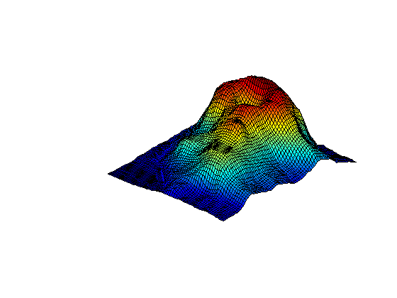
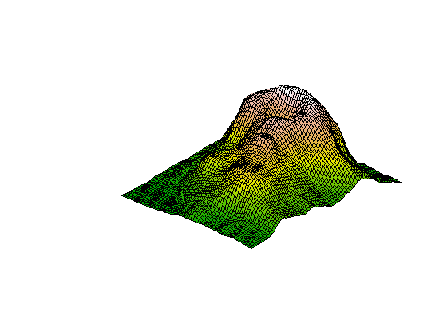

The statistical programming language R has a COM interface. We can use this to execute R commands from within MATLAB. The connection requires a local installation of R and also of the R-(D)COM Interface (for Windows only). This can be downloaded from http://lib.stat.cmu.edu/R/CRAN/other-software.html or other CRAN mirror site.
[status,msg] = openR; if status ~= 1 disp(['Problem connecting to R: ' msg]); end
evalR('demo("persp")');
volcano = getRdata('volcano');
surf(volcano);
axis off; view(-135,40);
 cols = char(evalR('terrain.colors(20)'));
red = hex2dec(cols(:,[2 3]));
green = hex2dec(cols(:,[4 5]));
blue = hex2dec(cols(:,[6 7]));
colormap([red,green,blue]/256);
 The R variable z has edges filled in for more realistic viewing. The surface is flipped around in the R version.
z = getRdata('z'); h = surf(fliplr(z)); axis off; view(-135,40);

lightangle(-135,40); lighting gouraud set(h,'linestyle','none');

a = 1:10;
putRdata('a',a)
b = evalR('a^2')
b =
1 4 9 16 25 36 49 64 81 100
evalR('b <- a^2'); evalR('c <- b + 1'); c = getRdata('c')
c =
2 5 10 17 26 37 50 65 82 101
closeR